Why Aren't There More Women Developers?

But First ....
Jennifer Wadella
@likeOMGitsFEDAY
- JavaScript Developer
- Community Organizer
- Diversity Advocate
Programs I've launched
Goal of this talk:
To explain contributing factors to the lack of women in technology roles.
To empower you to improve diversity in technology workplaces & communities.
- History of women in programming.
- What happened?
- The dark side of tech culture
- Current programs helping solve the diversity problem.
- How to improve your workplace.
- How to attract female candidates.
- Importance of mentoring.
- How to be an ally.
- Resources to learn more.
History of Women in Programming
- Ada Lovelace
- Grace Hopper
- Erna Schnieder Hoover
Ada Lovelace
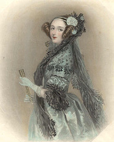“The more I study, the more insatiable do I feel my genius for it to be.”
Grace Hopper
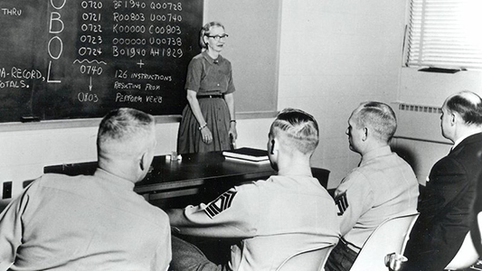“The most dangerous phrase in the language is, "We've always done it this way.”
Erna Schnieder Hoover
“I designed the executive program for handling situations when there are too many calls, to keep it operating efficiently without hanging up on itself. Basically it was designed to keep the machine from throwing up its hands and going berserk.”
And many more ...
- Kathleen Booth - ARC assembly in 1950
- Kateryna Yushchenko - Address in 1955
- Jean Sammet - FORMAC in 1962
- Cynthia Solomon - co-created Logo in 1967
- Barbara Liskov - CLU in 1974
- Adele Goldberg - co-created Smalltalk in 1980
- Sophie Wilson - BBC BASIC in 1981
What Happened?
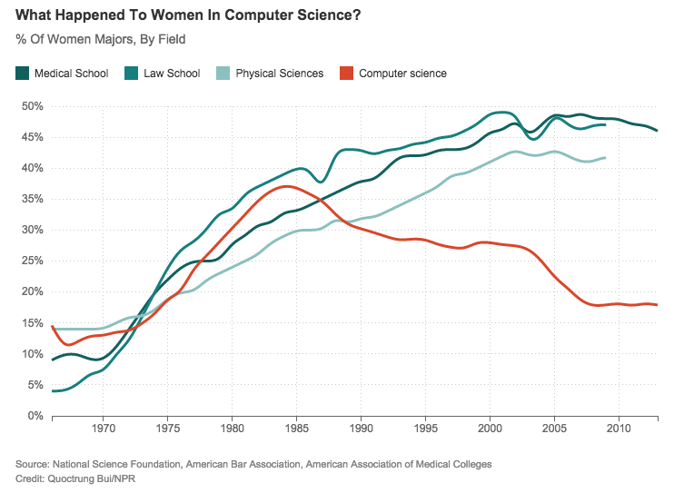Computers for homes were produced ... and only marketed to boys
RadioShack 1980's Ad
Today: society continues to send the wrong message
Even some of the good engagement attempts are disasterous
Mattel has since pulled this book from shelves.
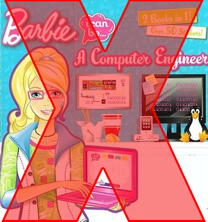Fortunately, you can rewrite this book via Feminist Hacker Barbie
tl;dr: girls are being told the exact OPPOSITE from boys when it comes to exploring STEM.
The Trouble With Bright Girls
“Bright girls believe that their abilities are innate and unchangeable, while bright boys believe that they can develop ability through effort and practice.”
https://www.psychologytoday.com/blog/the-science-success/201101/the-trouble-bright-girlsDark side of Tech Culture Being Revealed
- 2.19.17 Reflecting On One Very, Very Strange Year At Uber
- 6.30.17 Women in Tech Speak Frankly on Culture of Harassment
- 7.01.17 Sorry I'm a Creep
- 8.05.17 Google Manifesto
- 9.23.17 Push for Gender Equality in Tech? Some Men Say It’s Gone Too Far
- 9.29.17 These Women Entrepreneurs Created A Fake Male Cofounder To Dodge Startup Sexism
Current Issues:
Kate Heddleston - How our engineering environments are killing diversity (and how we can fix it).Current programs tackling the diversity imbalance in tech.
@LaunchCoderGirl
CoderGirl is a LaunchCode Education program that is designed to engage and educate women in the technology community in St. Louis. It is a year-long tech training program consisting of two 6-month cycles: a learning cycle and a project cycle.
@sheplusplus
SHE++ is a social enterprise that empowers women to make their mark on the technology industry. We believe that when women are equally represented in technology development, we accelerate innovation for those who need it most.
@girldevelopit
Girl Develop It is a nonprofit organization that exists to provide affordable and judgment-free opportunities for women interested in learning web and software development. Through in-person classes and community support, Girl Develop It helps women of diverse backgrounds achieve their technology goals and build confidence in their careers and their every day lives.
@girlswhocode
Girls Who Code programs work to inspire, educate, and equip girls with the computing skills to pursue 21st century opportunities.
@blackgirlscode
Black Girls Code's vision is to increase the number of women of color in the digital space by empowering girls of color ages 7 to 17 to become innovators in STEM fields, leaders in their communities, and builders of their own futures through exposure to computer science and technology.
@Hackbright
Hackbright Academy is the leading software engineering school for women founded in San Francisco in 2012. The academy graduates more female engineers than Stanford and UC Berkeley each year.
@pyladies
Pyladies is an international mentorship group with a focus on helping more women become active participants and leaders in the Python open-source community. Our mission is to promote, educate and advance a diverse Python community through outreach, education, conferences, events and social gatherings.

@ncwit
National Center for Women & Information Technology (NCWIT) is a non-profit community of more than 600 universities, companies, non-profits, and government organizations nationwide working to increase women’s participation in computing and technology. NCWIT equips change leaders with resources for taking action in recruiting, retaining, and advancing women from K–12 and higher education through industry and entrepreneurial careers.
@anitaborg_org
The Grace Hopper Celebration of Women in Computing is the World's Largest Gathering of Women Technologists. It is produced by the Anita Borg Institute and presented in partnership with ACM.
How to improve your workplace.
Have women in leadership roles
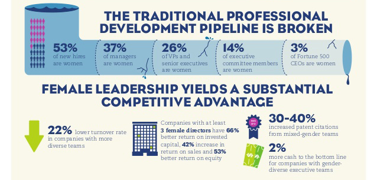 http://www.slideshare.net/mboyt/women-drive-growth-infographic-33512498Develop a mentorship program
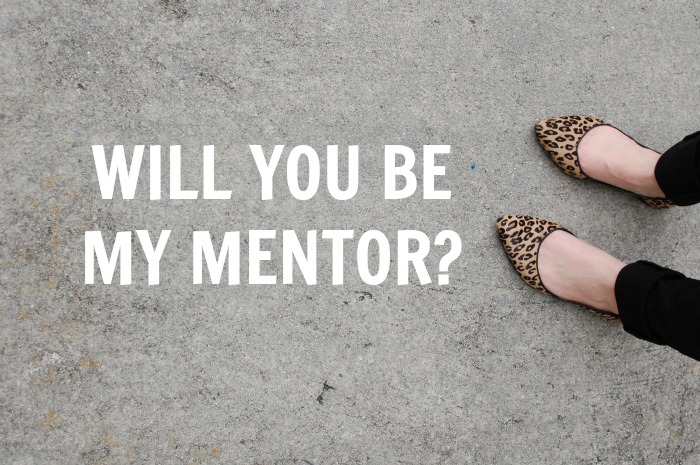 http://chronus.com/how-to-start-a-mentoring-programCreate a diversity support group
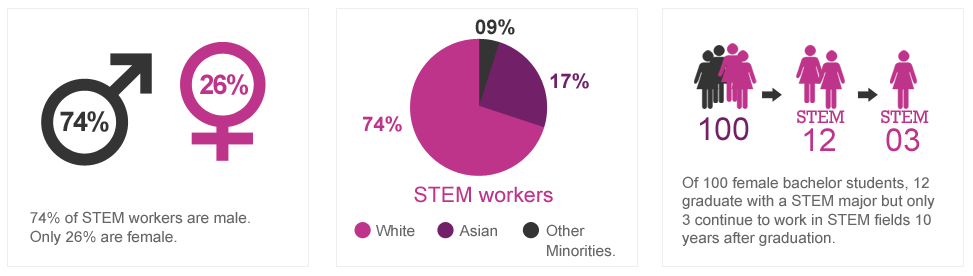Watch your 'wage gap'
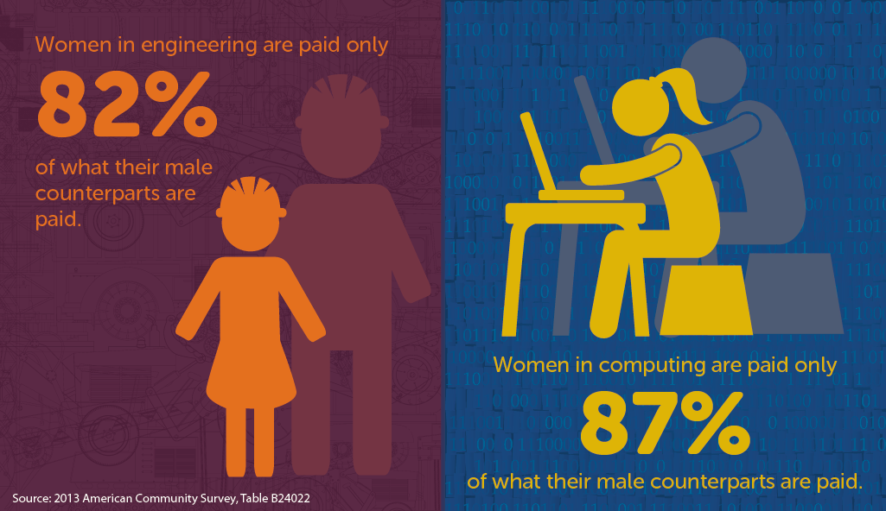 http://www.aauw.org/2015/04/14/women-shortchanged-in-stem/Place Importance on Pair Programming
Have a (Good) Process for Code Reviews
Revise Your HR Policy
- Include what to do in case of harassment
- Define workplace bullying
- Review maternity/paternity/adoption leave
- Rethink your "unlimited time off"
- Look into flex time
- Include community service time for employees
DO NOT minimize complaints/concerns of women
Almost all of us have a Susan Fowler story
How to attract female candidates.
I WANT to hire female developers. Where are they?
Silicon Valley, Season 2, Ep 4 "The Lady"
How to attract female candidates: take 2
- Revamp your job descriptions.
- Your employees are your best ambassadors.
- Look at what Etsy did.
- Sponsor meetups and groups that support women in tech.
- Don't postition her to be the 'token female'
Importance of Mentoring
- Helps to integrate women(anyone) into company
- Helps retain women.
- Provides opportunity for growth for all parties involved
- Help in all areas: career development, company, industry, profession, work/life integration ...
Types of Mentoring
- Formal - via structured program
- Informal(Organic)
- Peer
- Situational
- Supervisory
How to Encourage Mentoring
- Develop relationship of trust.
- Define roles & responsibilities.
- Establish goals for relationship
How to be an Ally
- Listen.
- Understand internalized sexism & racism.
- Help change the narrative.
- Stop making excuses for poor behavior.
- Report Incidents.
- Don't be a "cool girl".
Just listen
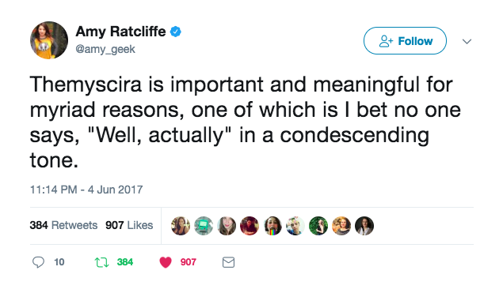Understand internalized sexism & racism
Internalized sexism is taking in and believing the stereotypes and misinformation that our sexist culture tells us about being female and what it means to be a woman, resulting in e.g. “What do I know…” , “Who am I to speak…” - Janet Thomas (BREAKFREE): THEORY AND THOUGHTS.
Help Change the Narrative
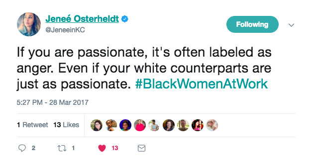Stop making excuses for poor behavior
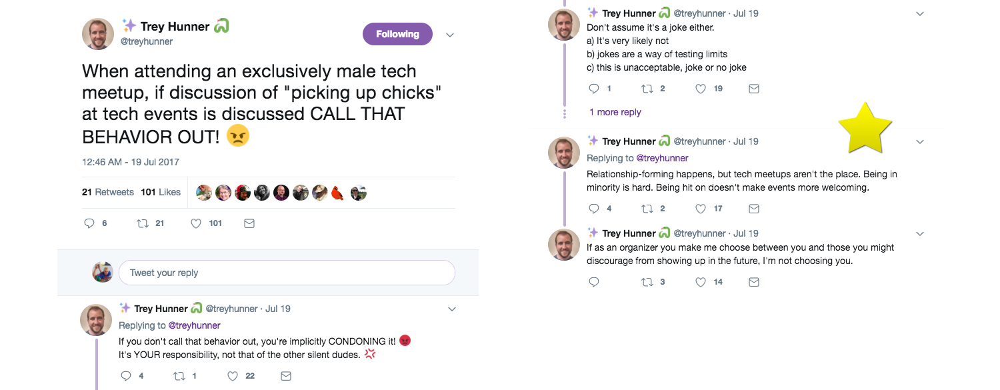This thread by Trey Hunner 😍
Report Incidents.
"Oh yeah, I almost forgot to tell you, there's a missing step on the unlit staircase with no railings. But it's okay because we all just remember to jump over it."
Some people are like that missing stair.
Don't Be a Cool Girl
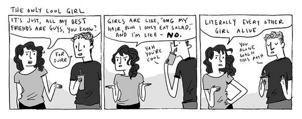Resources:
- Links in this presentation:
- Lean In, Sheryl Sandberg
- Million Women Mentors
- STEM Connector Newsletter
- National Center for Women in Technology
- Women's Bureau
- Kansas City Women in Technology
Slides available on Github
Questions?
Let's talk!